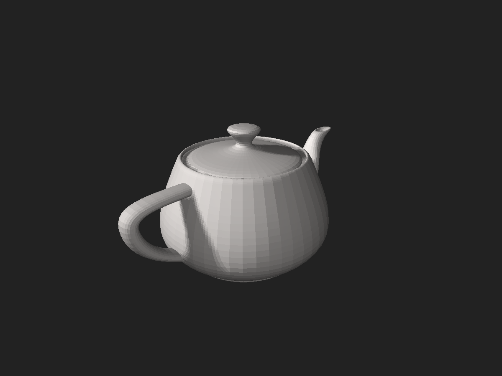
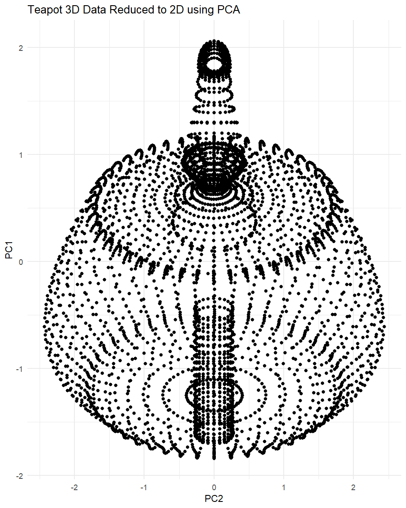

|  |  |
|---|
좌측 3D 모델을 2차원으로 옮긴 모습.
PCA는..
주성분 분석(PCA, Principal Component Analysis)은 고차원의 데이터를 저차원의 데이터로 축소하거나 변환하는 데 사용되는 통계적 기법입니다. 이 방법은 데이터의 분산(variance)을 최대한 보존하면서 데이터를 새로운 좌표계로 변환합니다. PCA는 다음과 같은 과정을 거칩니다.
- 데이터의 공분산 행렬(covariance matrix)을 계산합니다.
- 공분산 행렬의 고유값과 고유벡터를 찾습니다.
- 고유값이 큰 순서대로 해당 고유벡터를 정렬합니다. 이렇게 정렬된 고유벡터가 주성분(principal components)이며, 데이터의 분산을 나타냅니다.
- 원하는 차원의 수만큼 주성분을 선택합니다. 예를 들어, 3차원 데이터를 2차원으로 축소하려면 가장 큰 두 개의 고유값에 해당하는 고유벡터를 선택합니다.
- 선택한 주성분에 데이터를 투영하여 저차원의 데이터를 얻습니다.
PCA의 주요 목적은 다음과 같습니다:
- 차원 축소: 고차원의 데이터를 저차원의 데이터로 변환하여 데이터의 복잡성을 줄이고 계산 비용을 절감합니다.
- 시각화: 고차원의 데이터를 2D 또는 3D로 표현하여 데이터의 패턴, 클러스터 또는 이상치를 쉽게 시각적으로 확인할 수 있게 합니다.
- 노이즈 제거: 데이터의 주요 정보를 보존하면서 노이즈를 제거하여 데이터를 깨끗하게 만듭니다.
- 특성 선택 및 추출: 데이터에서 가장 중요한 특성을 선택하거나 새로운 특성을 추출하여 데이터를 더 효과적으로 분석할 수 있습니다.
PCA는 데이터 전처리, 시각화, 기계 학습 및 패턴 인식 등 다양한 분야에서 널리 사용되는 기법입니다. 하지만 주성분 분석에는 몇 가지 한계가 있습니다. 예를 들어, PCA는 선형적인 관계를 가정하기 때문에 비선형적인 데이터 구조를 제대로 표현하지 못할 수 있습니다. 이러한 경우에는 커널 PCA, t-SNE, UMAP 등 다른 차원 축소 기법을 고려할 수 있습니다.
PCA 예제
# Load required library
library(Rvcg)
library(rgl)
library(tidyverse)
# Load 3D Dataset
stl_mesh <- vcgImport("D:/Utah_teapot_(solid).stl")
# Convert stl file to df
vertices <- cbind(stl_mesh$vb[1,],stl_mesh$vb[2,],stl_mesh$vb[3,])
# Compress data in 2D Using PCA
pca_result <- prcomp(vertices, center = TRUE, scale. = TRUE)
reduced_data <- pca_result$x[, 1:2]
reduced_df <- data.frame(reduced_data)
colnames(reduced_df) <- c("PC1", "PC2")
# Visualize 2D data
ggplot(reduced_df, aes(x = PC2, y = PC1)) +
geom_point() +
theme_minimal() +
ggtitle("Teapot 3D Data Reduced to 2D using PCA")PCA from Scratch
# 예제 데이터 생성
set.seed(42)
x <- rnorm(100)
y <- 2 * x + rnorm(100, sd = 0.5)
z <- -x + y + rnorm(100, sd = 0.5)
data <- data.frame(x, y, z)
# 1. 데이터의 공분산 행렬 계산
data_cov <- cov(data)
# 2. 공분산 행렬의 고유값과 고유벡터 찾기
eigen_result <- eigen(data_cov)
# 고유값
eigen_values <- eigen_result$values
# 고유벡터
eigen_vectors <- eigen_result$vectors
# 3. 원하는 차원의 수만큼 주성분 선택 (여기서는 2차원으로 축소)
num_dimensions <- 2
selected_eigen_vectors <- sorted_eigen_vectors[, 1:num_dimensions]
# 4. 선택한 주성분에 데이터를 투영하여 저차원의 데이터 얻기
data_centered <- scale(data, center = TRUE, scale = FALSE)
reduced_data <- data_centered %*% selected_eigen_vectors
# 결과 출력
reduced_data <- data.frame(reduced_data)
colnames(reduced_data) <- c("PC1", "PC2")
print(reduced_data)